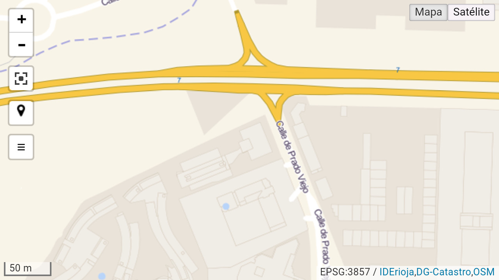

localizacion
La opción localizacion permite visualizar sobre el mapa la ubicación del usuario.
La función se activa con el valor 1. Esta opción presenta en el visualizador un botón que permite ver sobre el mapa la posición del dispositivo. Si no se especifica un valor o este parámetro se configura con el valor 0, no se muestra.
Este botón, que funciona como un interruptor, se encuentra inicialmente deseleccionado. Pulsando sobre él se geolocaliza en el mapa la ubicación del dispositivo mediante un punto azul y un círculo a su alrededor que informa sobre la precisión. Cuanto menor es el círculo alrededor del punto, mayor es la precisión con la que se ha calculado la posición.
Notas:
(1) - Para el correcto funcionamiento de esta función, es requisito imprescindible que previamente se encuentre activada en el dispositivo la opción de "localización".
Código de ejemplo
El siguiente ejemplo muestra la configuración para la activación del botón de localización:
<!DOCTYPE html>
<html>
<head lang="es">
<meta charset="UTF-8">
<title>Ejemplo de configuración localizacion</title>
<style>
body, html{
height: 100%;
border: 0;
padding: 0;
margin: 0;
}
#map{
width: 100%;
height: 100%;
}
</style>
</head>
<body>
<div id="map"></div>
</body>
<script>
var iderioja_config = {
"localizacion": 1
}
</script>
<script src="https://apigeo.larioja.org/v1/iderioja.js"></script>
</html>
Salida gráfica
Detalle de mapa en el que se ha incluido el botón de localización. (visualizar ejemplo)

Función de localización activada.